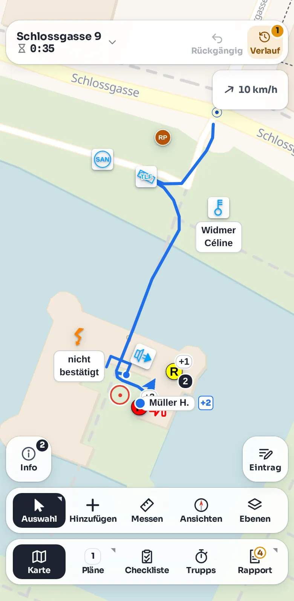

Open Source · kostenlos · Schweiz
Digitale Einsatzführung für die Feuerwehr.
KP Front ist der digitale Kommandoposten am Einsatzort: Karte, Pläne, Trupps, Verlauf und Rapport in einer App – auf Tablet, Laptop und Handy.
Ohne Login – in der Demo brennt es gerade in Musterdorf


Entwickelt aus dem realen Einsatzbetrieb der Feuerwehr Oberwil BL – dort erprobt und laufend weiterentwickelt.
Der Massstab
«Bedienbar um 3 Uhr nachts – nach sechs Monaten ohne Übung»
In der Milizfeuerwehr sitzt niemand täglich am Gerät. Also muss die App so gebaut sein, dass man sie im Halbschlaf richtig bedient: alles Wichtige direkt sichtbar, sinnvolle Vorgaben statt Einstellungen, und jede Aktion lässt sich rückgängig machen.
Lagekarte auf Papier
Ein Lagebild auf jedem Gerät.
FKS-Zeichen, Sektoren, Schlauchleitungen und Notizen auf swisstopo-Karten. Hydranten, Leitungskataster und Fahrzeugpositionen liegen als Ebenen darunter. Den Alarm aus Divera oder FireHub übernehmt ihr mit einem Tipp.
- Taktische Zeichen nach FKS – mit Geschoss, Entwicklung und Notizen
- Wassertransport: Druckverlauf und Pumpen entlang der Leitung
- Gebäude-Info und Sofortmassnahmen zum Objekt
Atemschutztafel und Stoppuhr
Überwachung, die sich selbst meldet.
Druck, Rückzugszeit und Kontaktuhr laufen pro Trupp mit. Die App meldet sich, bevor es knapp wird – auch wenn gerade niemand auf die Uhr schaut. Auf dem Handy wie auf dem Tablet.
- Kontaktuhr und Rückzugszeit pro Trupp
- Atemschutznotfall sofort zuoberst, auf allen Geräten
- Trupps mit oder ohne Atemschutz, mit Auftrag
Objektplan im Ordner
Ein Plan zum Draufzeichnen.
Einsatzplan öffnen, drauf zeichnen, Trupps platzieren, massstabsgetreu messen – mit denselben Werkzeugen wie auf der Karte. Im Geschossstapel seht ihr, welcher Trupp auf welchem Stock arbeitet.
- Objekt- und Einsatzpläne der eigenen Feuerwehr
- Georeferenziert: was auf der Karte steht, steht auch auf dem Plan
- Geschossstapel mit Trupps pro Stock
Notizzettel und Gedächtnis
Ein Verlauf, der mitläuft.
Tippen oder reinsprechen. Der Verlauf wird nur ergänzt, nie umgeschrieben – korrigiert wird mit einem neuen Eintrag, nicht mit dem Radiergummi. Offene Pendenzen erinnern sich selbst.
- Sprachnotizen – mit Transkriptionsdienst auch als Text
- Pendenzen mit Erinnerung
- Erfassungsblatt per QR-Code für alle, die beitragen
Rapport am Tag danach
Der Rapport beim Einrücken.
Lage, Mannschaft, Material und Verlauf fliessen direkt in den Rapport: kontrollieren, ergänzen, als PDF drucken. Für die Nachbesprechung spielt die Zeitreise die ganze Nacht nochmals ab.
- Einsatzrapport als fixfertiges PDF
- Abschlussprüfung zeigt, was noch fehlt
- Zeitreise: den Einsatz Minute für Minute nachspielen
Betrieb
Eure Daten bleiben bei euch.
KP Front ist Open Source. Jede Feuerwehr betreibt ihre eigene Installation – es gibt keinen zentralen Server, und nichts geht automatisch an uns.
Kostenlos
AGPL-3.0: keine Lizenzkosten, kein Abo, keine Kosten pro Gerät. Es bleiben eure eigenen Kosten für Betrieb und Infrastruktur.
Bei euch
Auf einem Mini-PC im Magazin, einem eigenen Server oder bei einem Cloud-Anbieter eurer Wahl. Offline-fähig als installierbare App.
Ohne Bindung
Der ganze Code liegt offen: selbst betreiben, selbst anpassen, selbst weiterentwickeln.
Auf euch zugeschnitten
Eure Mannschaft, Fahrzeuge, Pläne, Checklisten und Karten-Ebenen richtet ihr im eigenen Verwaltungsbereich ein – ohne Programmieren.
Funktionsumfang
Was alles drin ist.
Gewachsen an echten Einsätzen und Übungen, nicht an einer Featureliste. Alles, was von aussen dazukommt – Alarmierung, GPS, Microsoft-Anmeldung – ist optional: KP Front läuft auch vollständig ohne diese Anbindungen.
Karte & PlanTaktische Zeichen · Wassertransport · Gefahrgut · Gebäude-Info · Messungen
- Taktische Zeichen nach FKS-Konventionen, mit Attributen und Beschriftung
- Sektoren, Absperrkreise, Flächen und Freihandzeichnung
- Schlauchleitungen mit FKS-Annotationen, jede einem Trupp zugeordnet
- Messen von Distanz und Fläche, massstabsgetreu auch auf dem Plan
- Wassertransport: Druck entlang einer Schlauchleitung aus Höhenprofil, Schlauch-Ø und Wassermenge – die Pumpen setzt die Rechnung selbst, auf Wunsch direkt auf die Karte
- Ebenen: Hydranten, Leitungskataster, kantonale Kartendienste
- Gefahrgut-Nachschlagewerk: UN-Nummern, Stoffinformationen sowie Hinweise zu Absperr- und Schutzdistanzen, direkt im Einsatz verfügbar
- Wetter- und Windinformationen als Unterstützung für die Lagebeurteilung, dazu das Niederschlagsradar von MeteoSchweiz als Ebene
- Objektpläne als Whiteboard und Geschossstapel
- Karte & Objekte: ohne Einsatz die Karte der eigenen Feuerwehr – Objekte, Gefahren, Hydranten und Objektpläne nachschlagen
- Tafel mit FKS-Seiten: freie Skizze, Erste Führung und Handbuch-Blätter – im Rapport gedruckt wie das Original
- Gebäude-Info: Angaben aus dem Gebäuderegister – Gas, Heizöl, PV – und die Sofortmassnahmen zum Objekt
- Messungen: Messpunkte mit Gaswerten pro Raum und Geschoss, mit Verlauf und Alarmstufen
- Georeferenz: Plan und Karte über gemeinsame Landmarken verknüpfen – ein Objekt, auf beiden Flächen sichtbar, mit ehrlicher Angabe der Genauigkeit. Die Station lässt ihre Objektpläne vorab ausrichten und gibt sie frei
- Rückgängig/Wiederherstellen auf jeder Fläche – dokumentierte Vorgänge bleiben nachvollziehbar
Mannschaft & MittelAtemschutzüberwachung · Anwesenheit · Zeitplan · Standort teilen · Material
- Atemschutzüberwachung: Druck, Rückzugszeit, Kontaktuhr, Alarme
- Atemschutznotfall: ein Trupp in Not steht auf allen Geräten sofort rot zuoberst – mit Notfalluhr und Sicherungstrupp
- Trupps mit oder ohne Atemschutz: Mannschaft, Auftrag und Führungsperson – auf Karte, Plan und im Geschossstapel, mit eigener Truppfarbe, überall dieselbe
- Anwesenheit mit Ankunftszeiten und Dienstgraden
- Anrückend: wer auf den Divera-Alarm zugesagt hat, direkt über der Anwesenheit
- Zeitplan: Verfügbarkeiten und Schichten pro Person planen, Deckung über den ganzen Einsatz erkennen und als Führungsformular ausgeben
- Standort teilen: wer den Link öffnet, erscheint als Punkt auf der Lagekarte – freiwillig, und nur für diesen Einsatz
- Einsatz per Link weitergeben; Zugriff ist transparent ausgewiesen und kann jederzeit wieder aufgehoben werden
- Präsentationsmodus: wer den Einsatz offen hat, folgt dem Bildschirm der präsentierenden Person – alle können zeigen, gespeichert wird nichts
- Material mit Bestand und Verbrauch
- Checklisten für Führungsunterstützung und Einsatzleitung
- Einsatzleiter-Rolle: Anwesenheit, Mittel, Checklisten und Rapport führen – Karte und Trupps nur mitlesen
DokumentationVerlauf · Zeitreise · Rapport als PDF · Stationsdrucker
- Verlauf, der nur ergänzt und nie umgeschrieben wird
- Sprachnotizen mit Transkription, Fotos, Erinnerungen
- Zeitreise: den Einsatz Minute für Minute nachspielen, Wartezeiten übersprungen – für die Nachbesprechung
- Einsatzrapport als fixfertiges PDF mit Personal, Material, Zeiten, Journal, Kroki, Fotos und Atemschutzüberwachung
- Rapport und Zeitplan direkt auf dem Stationsdrucker im Magazin ausdrucken optional
- Auswertung für die Nachbesprechung: Kennzahlen und Zeitachse auf einem eigenen Blatt am Schluss des Rapports
- Fotos als Beilagen zum Rapport
- Abschlussprüfung: vor dem Abschluss zeigt KP Front, welche Angaben oder Klärungen im Rapport noch fehlen
- Partnerorganisationen mit Bemerkung im Rapport
- Erfassungsblatt für alle, die etwas beitragen, per QR-Code
- Alarm- und Einsatzzeiten aus dem Ablauf statt aus dem Gedächtnis
BetriebOffline-fähig · mehrere Geräte · Rollen · Alarmierung · Microsoft-Anmeldung
- Offline-fähig als installierbare App – die Bereitschaftsprüfung zeigt vor dem Einsatz, ob die benötigten Daten auf dem Gerät sind
- Mehrere verbundene Geräte arbeiten auf demselben Stand – nach einem Verbindungsunterbruch werden Änderungen wieder abgeglichen
- Drei Rollen: Führungsunterstützung bearbeitet alles, der Einsatzleiter führt die Dokumentation und liest die Lage mit, Betrachter lesen nur mit
- Tag-/Nachtmodus, Symbolgrösse, grosse Bedienflächen fürs Tablet
- Kann Alarme aus Divera oder FireHub übernehmen; weitere Alarmierungssysteme lassen sich über die offene Schnittstelle anbinden optional
- Fahrzeugpositionen per GPS optional
- Anmeldung mit Microsoft auf das bestehende Konto, zusätzlich zum PIN optional
- Objektbesuche ohne Einsatz, offline – Checkliste, Fotos und Bericht optional
- Eigener Verwaltungsbereich pro Feuerwehr: Mannschaft, Fahrzeuge, Checklisten, Karten-Ebenen und Vorlagen
Fragen & Antworten
Die häufigsten Fragen.
Warum umsteigen?
Alle sehen gleichzeitig dieselbe Lage – am Führungsfahrzeug, auf dem Tablet und beim Einsatzleiter. Keine Meldung geht auf einem Notizzettel verloren. Die Atemschutzüberwachung meldet sich selbst, bevor es knapp wird. Weniger Funkverkehr für Fragen, die ohnehin auf dem Lagebild stehen – und der Rapport ist beim Einrücken fast fertig statt am Wochenende danach. KP Front unterstützt die Einsatzleitung dabei, die Lage widerspruchsfrei zu halten und Abweichungen sichtbar zu machen: ein Trupp ohne Funkkontakt, ein Fahrzeug, das nirgends steht, eine Rückmeldung, die nie kam.
Für welche Feuerwehren und Einsätze ist KP Front gedacht?
Für Miliz-, Orts-, Stützpunkt-, Berufs- und Betriebsfeuerwehren – bei Bränden, Verkehrsunfällen, Hilfeleistungen, Chemie- und Ölwehr und Grossereignissen. Entstanden ist KP Front im Einsatzbetrieb einer Milizfeuerwehr; darum ist es für Leute gebaut, die es nicht jeden Tag bedienen.
Wo werden die sensiblen Einsatzdaten gespeichert?
KP Front wird von jeder Feuerwehr selbst betrieben (Self-Hosted). Einsatzdaten – Lagekarte, Atemschutzüberwachung, Verlauf und Gebäudepläne – liegen auf der eigenen Installation und den eigenen Geräten: etwa auf einem Mini-PC im Magazin, einem eigenen Server oder bei einem selbst gewählten Cloud-Anbieter. Es gibt keinen zentralen Server, und nichts geht automatisch an einen Anbieter oder an uns. Karten-, Adress- und Wetterdienste (standardmässig unter anderem swisstopo) erhalten nur die jeweils abgefragte Position; weitere externe Dienste laufen nur, wenn die Feuerwehr sie selbst einrichtet.
Wie unterscheidet sich KP Front von kommerziellen Systemen?
KP Front ist Open Source (AGPL-3.0): keine Lizenzgebühren, kein Abo, keine Kosten pro Gerät. Jede Feuerwehr betreibt ihre eigene Installation und behält damit die Kontrolle über ihre Daten. Was bleibt, sind die eigenen Kosten für Betrieb, Infrastruktur und allenfalls externe Unterstützung. Die Weiterentwicklung kommt direkt aus der Praxis der Feuerwehr Oberwil BL; Fehlermeldungen, Ideen und Beiträge aus der Open-Source-Community sind willkommen.
Auf welchen Geräten läuft KP Front?
KP Front läuft im Browser – ohne App Store. Gebaut ist es fürs Tablet: Auf dem iPad und auf Android-Tablets lässt es sich wie eine App auf dem Startbildschirm installieren und arbeitet dann auch ohne Verbindung. Am Laptop im Führungsfahrzeug oder im Magazin läuft dieselbe Oberfläche mit Maus und Tastatur. Das Handy ist der Begleiter: Lage ansehen, Einträge erfassen, den Atemschutz im Blick behalten – gezeichnet und geführt wird am grösseren Bildschirm. Alle Geräte zeigen denselben Einsatz.
Was braucht es für den Betrieb?
Ein kleiner Mini-PC oder Server im Magazin reicht. Für Einrichtung, Updates und Backups braucht es jemanden mit Docker- und Kommandozeilen-Erfahrung, sei es in der Feuerwehr, in der Gemeinde oder bei einer unterstützenden IT. Die Anleitung und der Verwaltungsbereich führen durch den Aufbau. Allgemeine Fragen beantworten wir gerne; Daten und Betrieb bleiben in der Verantwortung der jeweiligen Feuerwehr.
Gibt es Unterstützung bei Installation und Betrieb?
Ja. Allgemeine Fragen zur Installation und Nutzung werden unentgeltlich beantwortet. KP Front kann auf eigener Infrastruktur oder bei einem selbst gewählten Hosting- oder Cloud-Anbieter betrieben werden. Nach individueller Absprache ist auch Unterstützung bei Installation, Einrichtung, Updates oder Betrieb möglich. Weitergehende Unterstützung kann kostenpflichtig sein.
Funktioniert KP Front ohne Internetverbindung?
Ja. KP Front ist grundsätzlich offline nutzbar. Karten und weitere benötigte Daten werden lokal gespeichert. Die Karten und Pläne rund um den Einsatz lädt die App selbst, kurz nachdem er geöffnet wurde – und die Bereitschaftsprüfung zeigt vor dem Einsatz, ob die benötigten Daten auf dem Gerät sind. Wetter- und andere zeitabhängige externe Daten entsprechen offline dem Stand der letzten Aktualisierung. Mehrere Geräte können über eine bestehende Netzwerkverbindung synchronisiert werden, bei Bedarf auch innerhalb eines eigenen lokalen Netzes ohne Internetzugang. Nach einem Unterbruch wird abgeglichen, sobald wieder eine Verbindung besteht; was in der Zwischenzeit erfasst wurde, bleibt erhalten.
Können wir es an unsere Abläufe anpassen?
Ja. Jede Feuerwehr hat ihren eigenen Verwaltungsbereich: Mannschaft, Fahrzeuge, Doktrin und Vorlagen sind dort frei einstellbar. Checklisten, Objektpläne und Karten-Ebenen kommen aus den eigenen Stationsdaten: einzeln ladet ihr sie im Verwaltungsbereich hoch, viele auf einmal mit den mitgelieferten Kommandozeilen-Werkzeugen. Und weil der ganze Code auf GitHub steht, lässt sich alles Übrige bauen – selbst oder in Auftrag.
Funktioniert KP Front nur in der Schweiz?
Nein. KP Front ist als Open-Source-Software frei zugänglich und kann weltweit an lokale Gegebenheiten angepasst werden. Ab Werk ist die Anwendung für die Schweiz vorkonfiguriert – mit swisstopo-Karten, taktischen Zeichen nach FKS und den FKS-Vorlagen für die Führung im Einsatz. Ausserhalb der Schweiz lassen sich andere Kartengrundlagen einstellen; die Adresssuche unterstützt heute nur die swisstopo-Schnittstelle und braucht dort eine Anpassung.
In welchen Sprachen ist KP Front verfügbar?
Die Benutzeroberfläche von KP Front gibt es auf Deutsch, Französisch, Italienisch und Englisch. Deutsch ist massgebend; die anderen drei Sprachen sind vollständig, aber noch nicht von Feuerwehrleuten gegengelesen. Als Open-Source-Anwendung kann KP Front um weitere Sprachen erweitert werden. Dafür ist eine vollständige und fachlich geprüfte Übersetzung der Feuerwehrbegriffe erforderlich.
Wie fangen wir an?
Mit der Demo, ohne Anmeldung – in Musterdorf brennt es schon, und alle Besucher teilen denselben Einsatz (Neustart zweimal täglich, um 00:00 und 12:00 Uhr, Zeitzone Europe/Zurich). Danach an einer Übung ausprobieren. Wenn es passt, führt die Einrichtungsanleitung zur eigenen Installation.
KP Rück – das Schwesterprojekt für den rückwärtigen Kommandoposten: ein Board für Personal, Fahrzeuge und Material. Beide erhalten denselben Alarm und laufen unabhängig voneinander. Anleitung für beide auf einem Server →
KP Rück ansehenKontakt
Selbst ausprobieren.
Die Demo läuft ohne Login. Wollt ihr KP Front bei euch einsetzen, oder fehlt etwas? Meldet euch – wir lesen alles.
Öffentliche Demo: Keine echten Einsatz-, Personen-, Standort- oder Organisationsdaten eingeben. Alle Besucher teilen dieselbe Demo. Die eingegebenen Daten bleiben bis zum nächsten automatischen Reset gespeichert.
Direkt schreiben Ohne GitHub-Konto, oder wenn etwas nicht öffentlich stehen soll – auch für «wir würden das gerne bei uns ausprobieren».
Für Fragen und offene Ideen gibt es die GitHub-Diskussionen.